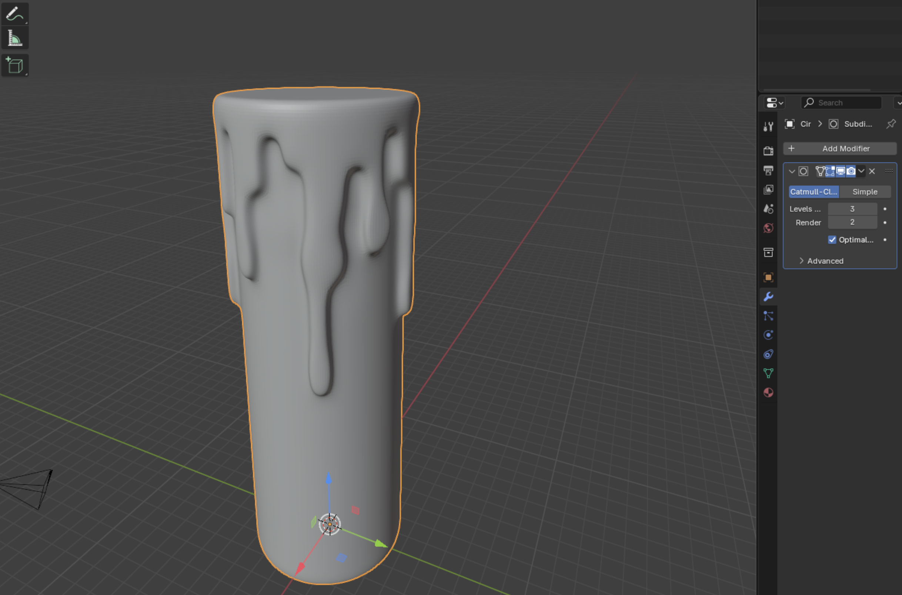
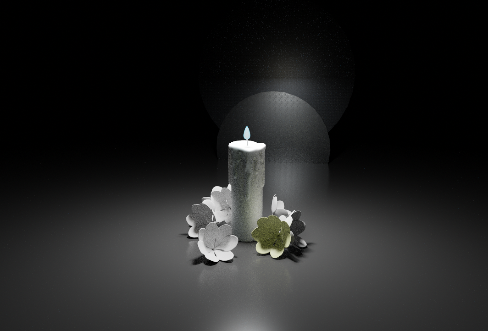
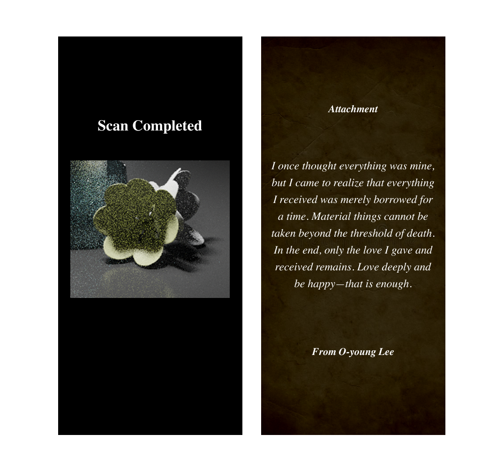

Possible-Plausible-Probable Cone Frame

When alive, money and fame are important, but what matters to the deceased? What is the best thing to pass on to one’s descendants? While material wealth may be significant in life, what remains for future generations after death is how much they were loved, how much dedication and effort were put into living a meaningful life. Before dying, one could create an artifact that embodies their will to live, something that the living can interact with to connect and resonate with. A new funeral system that connects the deceased and the living, allowing continuous expressions of love and inspiration.
The AI Candle and Digital Flower help maintain a positive connection between the living and those who have passed away by sharing their words of wisdom. When someone confides in the AI Candle during a difficult time, one of the surrounding flowers begins to glow. By scanning the glowing flower with their phone—similar to a QR code—they receive a message containing wisdom left behind by someone who has passed. In the face of death, life’s small worries often seem insignificant. What may feel overwhelming to the living could be eased by the wisdom of those who have already reached the end.
First, I created a cylinder and subdivided the faces into smaller sections. Then, I used Extrude to shape the melted wax. To make it look smoother and more rounded, I applied Subdivision and Shade Smooth. When designing the curves on the top part of the candle, I used Proportional Editing Mode so that instead of moving just one face, the surrounding faces moved along with it, creating a more natural and seamless look.
I made the particles appear from the start, with one being green and the others purple. To achieve this, I added a color type parameter to the constructor and modified the relevant conditional statements accordingly.

To make the initial circles look like rocks and the ones generated by mouse clicks look like ants, I set the initial circle to gray and the others to black. I achieved this by assigning the initial circle's creation to the setup function and the ant-like circles' creation to the mouseReleased function. The Particle.js file was also updated accordingly to reflect these changes.
 My code already had functionality to show connections between objects using the reachOut function. When two particles are within a distance of 70–250 pixels, a white line is drawn between them. However, I wanted black ants to disappear when they collided with rocks. To achieve this, I studied collision detection. Unfortunately, the tutorials I watched were difficult to adapt to my code, so I used ChatGPT to assist me. Here's what I learned: First, i represents black ants, and j represents rocks. I added an isTouching function in Particle.js to check if two particles were touching. I used partColor.levels[2] === 0 to check if one of the colliding particles was black. When this condition was met, I removed the corresponding i particle using splice(i, 1).